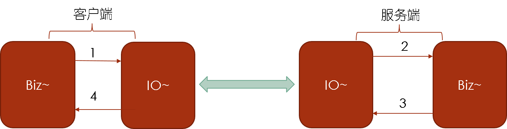

Dubbo客户端异步接口的实现背景和实践
铺垫

先简单介绍下一次完整的Dubbo调用所经历的线程阶段。几个信息这里罗列下
-
Biz~代表业务线程，即便是业务逻辑处理所处的线程，Biz~线程池可能是业务自己创建维护，大多数的可能是系统框架自身管理的（比如web型的业务系统跑在Tomcat容器下，Biz~线程就是Tomcat维护）；IO~代表网络数据处理线程，是IO框架（比如Netty，Grizzly）创建维护，Dubbo Remoting所默认Netty实现是NioEventloopLoopGroup；另外按照Channel与IO线程的绑定关系，也可以直接把IO~看成一个可接受事件消息的Channel。像Biz和IO这样的异步处理阶段在JDK8中有个很精确地抽象描述，叫CompletionStage。
-
大家知道，线程与线程之间做数据通信的方式是共享变量，Biz和IO两个stage之间的数据通信是Queue，具体到Dubbo实现，在客户端一侧的实现（即上图中用1所标注的步骤）中Biz是通过向EventLoop的LinkedBlockingQueue放置一个Task，而EventLoop有对应的Thread会不停的迭代Queue来执行Task中所包含的信息，具体代码可以看SingleThreadEventExecutor（顺便提下，Netty中默认是用无上限的LinkedBlockingQueue，在Biz的速率高于网络速率情况下，似乎好像有Memory Leak的风险）。
-
如上图所示，标准的一次RPC调用经过了图中所示的1,2,3,4的四次消息(事件)传递，分别是客户端业务线程到IO线程的请求发出，服务端IO线程到业务逻辑线程的__请求接受，__服务端处理完成后由业务逻辑线程到IO线程的响应写出，客户端收到结果后从IO线程到业务逻辑的响应处理。除了1与4之间一般需要维护响应和请求的映射对应关系，四次的事件处理都是完全独立的，所以一次RPC调用天然是异步的，而同步是基于异步而来。
客户端异步
实现背景
在Java语言（其他语言不清楚）下一次本地接口的调用可以透明地通过代理机制转为远程RPC的调用，大多数业务方也比较喜欢这种与本地接口类似的编程方式做远程服务集成，所以虽然RPC内部天然是异步的，但使用Dubbo的用户使用最广泛的还是同步，而异步反而成为小众的使用场景。同步的优点是编程模型更加符合业务方的“传统”习惯，代价是在图中的1代表的请求发出事件后需要阻塞当前的Biz~线程，一直等到4代表的响应处理后才能唤醒。在这个短则微妙级别，长则秒级的1,2,3,4处理过程中都要阻塞Biz~线程，就会消耗线程资源，增加系统资源的开销。
所以，客户端异步的出发点是节省线程资源开销，代价是需要了解下异步的使用方式:)。在同步方式下API接口的返回类型是代表着某个业务类，而当异步情况下，响应返回与请求发出是完全独立的两个事件，需要API接口的返回类型变为上述中说的CompletionStage才是最贴合的，这是Dubbo在异步上支持的必然异步。回到最近的Dubbo发布版，是不改变接口的情况下，需要在服务创建时注册一个回调接口来处理响应返回事件。
下面以示例来说。
示例
事件通知的示例代码请参考：https://github.com/dubbo/dubbo-samples/tree/master/dubbo-samples-notify
事件通知允许 Consumer 端在调用之前、调用正常返回之后或调用出现异常时，触发 oninvoke、onreturn、onthrow 三个事件。
可以通过在配置 Consumer 时，指定事件需要通知的方法，如：
<bean id="demoCallback" class="com.alibaba.dubbo.samples.notify.impl.NotifyImpl" />
<dubbo:reference id="demoService" check="false" interface="com.alibaba.dubbo.samples.notify.api.DemoService" version="1.0.0" group="cn">
<dubbo:method name="sayHello" onreturn="demoCallback.onreturn" onthrow="demoCallback.onthrow"/>
</dubbo:reference>
其中，NotifyImpl 的代码如下：
public class NotifyImpl implements Notify{
public Map<Integer, String> ret = new HashMap<Integer, String>();
public void onreturn(String name, int id) {
ret.put(id, name);
System.out.println("onreturn: " + name);
}
public void onthrow(Throwable ex, String name, int id) {
System.out.println("onthrow: " + name);
}
}
这里要强调一点，自定义 Notify 接口中的三个方法的参数规则如下：
oninvoke方法参数与调用方法的参数相同；onreturn方法第一个参数为调用方法的返回值，其余为调用方法的参数；onthrow方法第一个参数为调用异常，其余为调用方法的参数。
上述配置中，sayHello方法为同步调用，因此事件通知方法的执行也是同步执行。可以配置 async=true让方法调用为异步，这时事件通知的方法也是异步执行的。特别强调一下，oninvoke方法不管是否异步调用，都是同步执行的。
实践建议
-
RPC调用后的逻辑非强依赖结果：异步回调是在客户端非强依赖服务端的结果情况下，是适用客户端的异步调用。
-
rx场景：自从了解到reactive的编程模型后，认为只要编程思维能够拥抱reactive，并且业务模型的状态机设计能做适当的调整，任何场景下都比较适用异步来解决，从而得到更好的终端响应体验。 对于Dubbo来说，当下的异步接口模型是需要像reactive的模型接口做改进，才能使得用户更自然地适用异步接口。
小结
- 客户端异步的出发点就是请求发出和响应处理本身为两个不同的独立事件，响应如何被处理和在哪个线程中处理等都是不需要和请求发出事件的业务逻辑线程做耦合绑定。
- 响应事件回调的处理逻辑在哪个线程中做处理是需要根据情况来选择。建议，如果回调逻辑比较简单，建议直接在IO线程中；如果包含了远程访问或者DB访问等IO型的__同步__操作，建议在独立的线程池做处理。